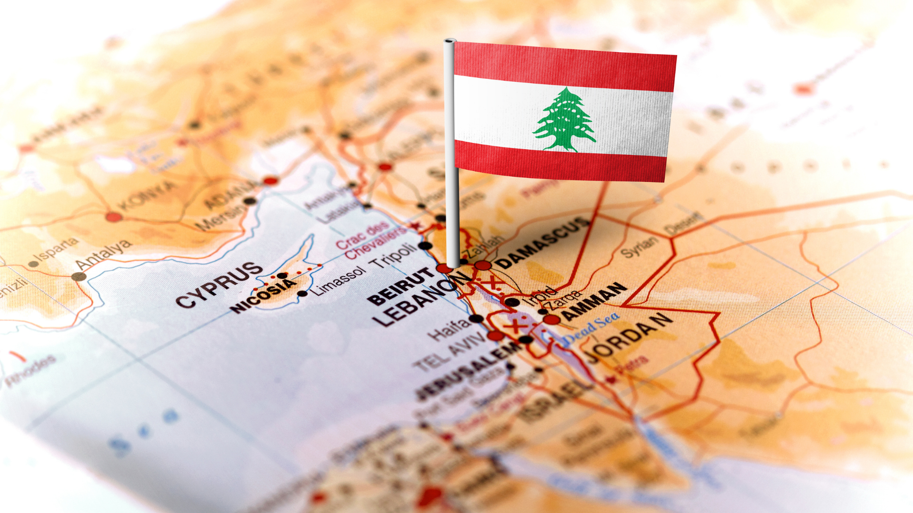
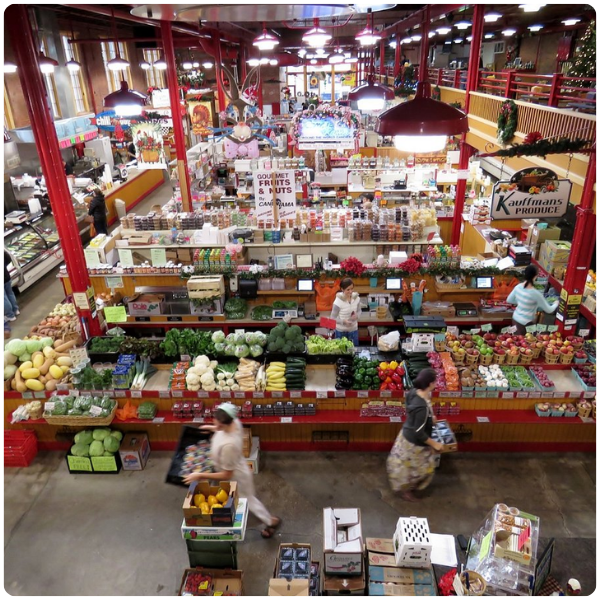
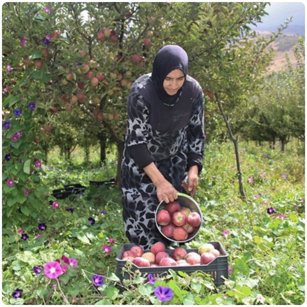
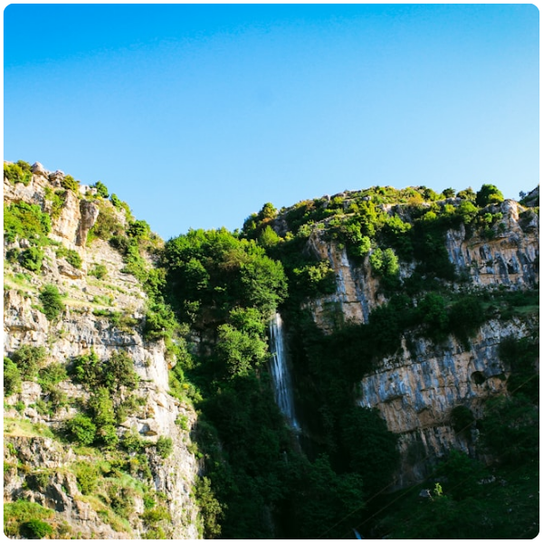
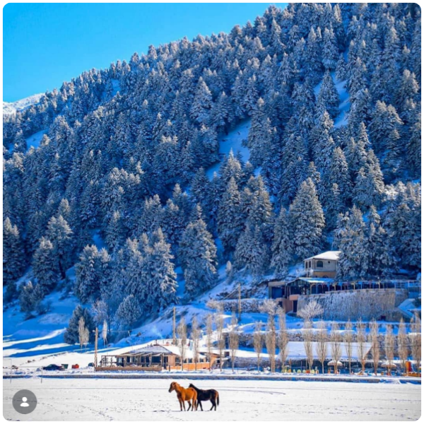
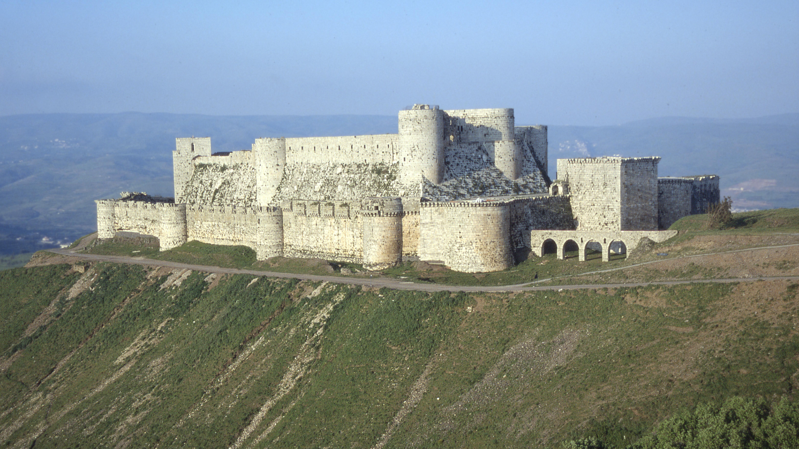
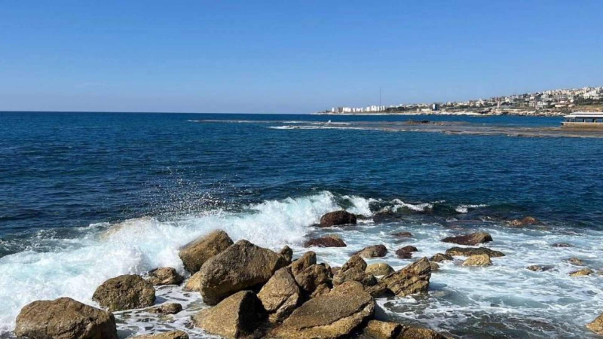
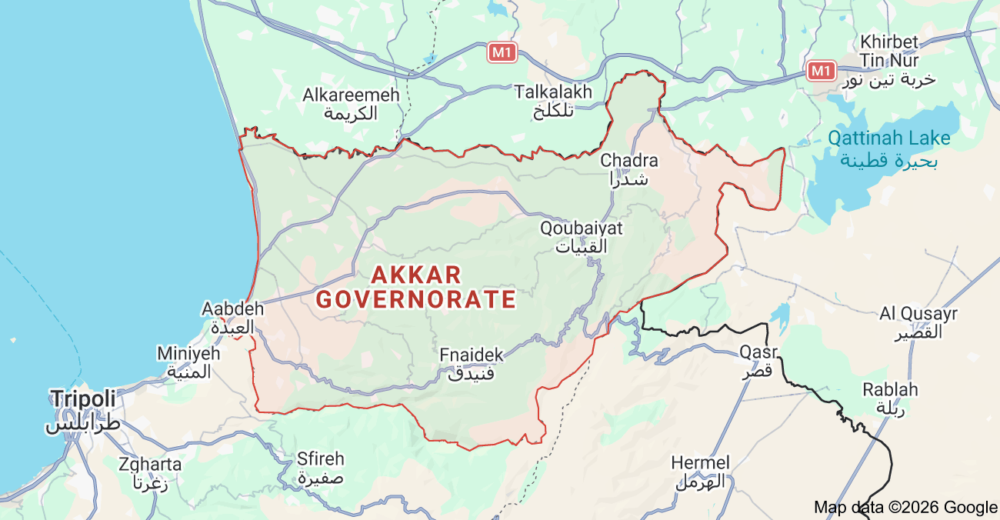

Ministry of Tourism Lebanon
DISCOVER LEBANON
Where ancient cedar forests, rugged mountains, and a quiet Mediterranean coastline converge — Lebanon's best-kept secret awaits.

Akkar Governorate sits at the very top of Lebanon — bordered by Syria to the north and east, and kissed by the Mediterranean Sea to the west. It is Lebanon's largest governorate by land area, yet one of its most quietly kept.
The landscape shifts dramatically as you travel through. Along the coast, a warm breezy shoreline stretches away from tourist crowds. Drive inland, and the land rises steeply into the Akkar Mountains — dense with cedar and pine forests, carved by deep river valleys, and dusted with snow in winter. Some peaks soar beyond 2,000 meters above sea level.
Coastal Akkar is warm and sunny in summer, while the highlands can be cold and snow-covered from December through March — making Akkar a destination for all seasons.


An authentic city that is a base camp full of local markets, everyday Lebanese life, and the warmth of a community rarely visited by outsiders.

Perched in the northern highlands, Qoubaiyat is where Lebanese families escape the summer heat. Think apple orchards, cool breezes, stone houses, and a sky so clear you'll want to stay forever.

A bustling coastal town south of Halba, connecting Akkar to the rest of northern Lebanon. A great first stop before heading deeper into the governorate's quiet interior.

Close to the Syrian border, Fneidek is a fascinating crossroads of cultures and communities — a blend of histories and people living side by side that gives Akkar its multicultural soul.

Lebanon's national symbol is the cedar tree — and Akkar is one of the last places where ancient cedar groves still stand tall. Walking through these forests feels like stepping into another era. The trees are massive, silent, and centuries old. The air is different here. Bring a camera. You'll need it.
High on a rocky peak, this Crusader-era fortress is one of Lebanon's hidden historical gems. Getting here requires a hike — but the reward is one of the most dramatic panoramic views in the country, stretching across mountains, valleys, and into Syria. Unmissable for history lovers and adventure seekers alike.


In spring, Akkar's highlands come alive with rushing rivers and seasonal waterfalls fed by melting snow. These hidden valleys are perfect for hiking, photography, and breathing in some of the freshest air in all of Lebanon.
Unlike the crowded beaches near Beirut, Akkar's coastal strip offers a quieter, more authentic seaside experience. No loud beach clubs — just the sea, the breeze, and a slice of Lebanese coastal life as it used to be. Simple, honest, and beautiful.

Akkar lies about 80 to 120 km north of Beirut — roughly a 1.5 to 2-hour drive. The scenic coastal highway makes the journey part of the experience.
All international visitors arrive at Beirut–Rafic Hariri International Airport. From there, head north by car or taxi along the coastal highway.
Take the coastal highway north, passing through Jounieh, Batroun, and Tripoli before entering Akkar. Renting a car is strongly recommended for exploring the mountain interior.
Take a shared minibus or service taxi from Tripoli, the main transit hub closest to Akkar. Budget-friendly and authentically local.
Mountain roads can be narrow and icy in winter. Always check road conditions before heading to higher villages between December and February.

Akkar doesn't hand you a polished tourist experience. It gives you something better, the real Lebanon.
Begin your day with a sunrise drive through the highlands, where mountain villages slowly come to life and the air still carries the chill of the night.
Stop in Qoubaiyat for a morning coffee and a piece of apple tart from a local bakery.
Hike through cedar forests that have stood for centuries, unchanged and unhurried.
End the afternoon watching the sun dip into the Mediterranean from somewhere along the quiet coast.
Experience genuine hospitality from a community that still greets strangers like old friends.